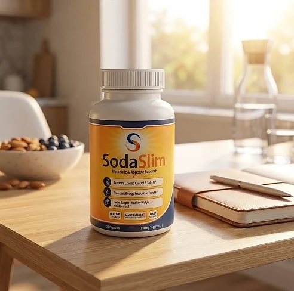
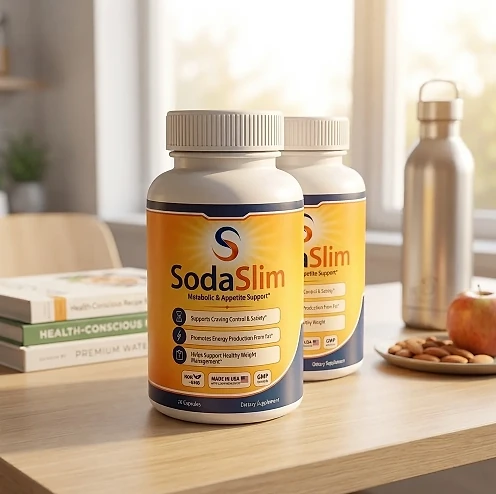
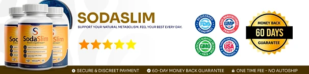

What Is SodaSlim And How Does It Work?
SodaSlim is a dietary supplement in capsule form designed to support a well-functioning metabolism, appetite control, and healthy weight management for adults who want to address the constant cravings, low energy, and slow progress that can make weight goals feel out of reach through a natural, dependable approach — without complicated routines or temporary quick fixes.
It utilizes a simple daily capsule that combines Chicory Root Inulin, Potato Resistant Starch, and a three-strain Probiotic Blend to support the gut microbiome, feelings of fullness, and steady energy, helping the body maintain its natural balance throughout the day.
The ingredients in SodaSlim are prebiotic fibers and probiotic strains that, according to the official website, work on two fronts: the prebiotic fibers feed the beneficial bacteria in the gut, while the probiotic strains are included to help the body process food more efficiently, particularly for adults who prefer one simple capsule a day over multiple products or complicated plans.
Rather than acting as a short-lived artificial fix, SodaSlim focuses on a gut-first approach, working gradually alongside daily routines to help maintain satiety between meals, craving control, and long-term wellness.
With consistent daily use, many users report fewer cravings during the day, steadier energy, and a gradual sense of control over their eating habits, especially when combined with a balanced diet, good sleep, and regular exercise.
From a practical standpoint, SodaSlim is a daily metabolic and appetite support capsule designed to support wellness from within — helping you stay active, energized, and in control of your health.
Manufactured in the USA with globally sourced ingredients, according to the product label, SodaSlim is designed for regular daily use, focusing on safety, purity, and quality for those seeking a natural, non-prescription route to healthy weight management.
SodaSlim Ingredients
Every capsule of SodaSlim contains three active ingredients listed on the Supplement Facts panel, a combination of two prebiotic fibers and a probiotic blend chosen to support gut balance, satiety, and a healthy metabolism as part of a consistent daily routine:
Chicory Root Inulin (211 mg): A prebiotic fiber extracted from the root of Cichorium intybus that serves as fuel for beneficial gut bacteria and, according to the official website, is included to help prolong feelings of fullness and make appetite easier to manage throughout the day.
Potato Resistant Starch (100 mg): A starch that is not digested in the stomach and reaches the intestine intact, where it ferments and feeds the gut bacteria linked to metabolism, supporting steady energy between meals.
Probiotic Blend (36 mg): A combination of three strains — Bifidobacterium infantis, Clostridium butyricum, and Akkermansia muciniphila — included to support the intestinal barrier and healthy hunger and satiety signals.
Together, these ingredients work synergistically to support craving control, satiety, and healthy weight management from within. The other ingredients on the label are hypromellose (vegetarian capsule), microcrystalline cellulose, magnesium stearate, and silica, and the official website describes the capsules as vegetarian and lactose-free.
SodaSlim is designed for daily use, offering a natural, non-prescription approach to supporting metabolism and appetite, without complicated routines or aggressive synthetic compounds.
SodaSlim Side Effects
SodaSlim is generally considered well tolerated and is designed for adults of different ages and lifestyles who are looking for a safe, natural, and balanced approach to weight management, especially those who prefer an easy one-capsule daily routine to support metabolism, appetite, and well-being without resorting to risky solutions with severe side effects.
All ingredients used in SodaSlim are described on the official website as safe, high-quality, and natural, the label carries a GMP (Good Manufacturing Practice) seal, and SodaSlim is manufactured in the USA with globally sourced ingredients, reinforcing consistency, safety, and reliability.
With no widespread reports of serious side effects, SodaSlim is generally considered a well-tolerated option. Because the formula combines prebiotic fibers and live probiotic strains, some people may notice mild gas or bloating during the first days as the gut adjusts, and anyone with a weakened immune system should speak with their doctor before taking a probiotic. It is not intended to diagnose, treat, cure, or prevent any disease, and individual results may vary.
According to the label, pregnant or nursing mothers, children under the age of 18, and individuals with a known medical condition should consult a physician before using SodaSlim. The same applies to anyone taking prescription medications, ensuring it fits safely within their personal wellness plan.
SodaSlim Dosage
The recommended SodaSlim dosage is one capsule a day with an 8 oz. glass of water, and it is designed to fit easily into a daily routine, making consistency simple and convenient. Formulated as an easy daily capsule, it requires no powders to mix, no drinks to prepare, and nothing to measure.
The recommended approach, as printed on the label, is to take one SodaSlim capsule once a day. For best results, the official website suggests taking SodaSlim in the morning, preferably before a meal, at the same time each day, or as directed by your healthcare professional, which allows its prebiotics and probiotics to work consistently.
For best results, consistency is key. Each bottle contains 30 capsules, a one-month supply, and because nutritional support for the gut microbiome builds gradually, many customers make it part of an ongoing wellness routine.
There is no need for complex schedules or multi-step routines. One simple daily capsule is designed to build lasting support gradually alongside a balanced diet, good sleep, and an active lifestyle. Because the formula contains live probiotic strains, the label advises refrigerating the bottle for optimal quality and keeping it away from heat, light, and humidity.
As with any dietary supplement, it's important not to exceed the recommended dose and to check the label on your bottle. SodaSlim works best when used regularly, combined with proper hydration, balanced nutrition, and healthy daily habits.
SodaSlim – Refund Policy
You can order SodaSlim with confidence, knowing that every purchase is protected by a 60-day guarantee from the date of purchase. This allows you to try the formula and decide if it delivers the support you expect.
According to the refund policy on the official website, refund requests can be made after a minimum trial period of 30 days and must be started within 60 days of the purchase date. Only sealed bottles are eligible, shipping and customs fees are not refunded, return shipping is paid by the customer, and a 20% restocking fee is deducted.
How the refund process works: If you decide SodaSlim is not right for you, email customer support to request a return authorization code, then follow the return instructions provided. Once the returned items are received and verified, your refund will be issued to the original payment method, and you will receive a confirmation email.
Customer Support Contact Information: contact@customercs.com or +1 (507) 448-8190, as printed on the product label. The team typically replies to emails within 48 business hours.
Refund Processing Time: After your refund is processed, it may take 5 to 10 business days to appear on your statement, depending on your financial institution.
This refund policy is designed to give customers a clear and transparent experience when trying SodaSlim.
SodaSlim Customer Reviews
-
Michele Thompson — Houston, TXVerified Purchase – 6 Bottles
“I struggled with excess weight for years, which really affected my self-esteem. After using SodaSlim for 3 months, I am now able to lose weight and keep my body in shape. It has revitalized my life and given me a new confidence.”
-
Sarah Rodriguez — Chicago, ILVerified Purchase – 6 Bottles
“... I often struggled with losing weight and managing my blood sugar. SodaSlim has been a game-changer for me. After just 1 month of use, I noticed significant improvements in my metabolism and overall health. I feel like I’ve regained my energy!”
-
Lauren Rio — Seattle, WAVerified Purchase – 6 Bottles
“After menopause, I experienced severe weight gain and struggled to shed it. I thought my days of having a healthy body were over until I discovered SodaSlim. After using it for 2 months, I’m now able to enjoy an active life and feel good about myself again. It has truly been a life-changing product.”
SodaSlim – Where To Buy
SodaSlim is sold through its official website, so if you decide to try it, it's important to be careful about where you purchase it. The official website is the only sales channel the manufacturer lists, and it does not point to marketplaces such as Amazon, eBay, or Walmart.
Listings on third-party platforms may look similar but cannot be verified as authentic, raising concerns about safety, quality, and ingredient freshness — a real concern for a formula with live probiotic strains. Products purchased outside the official source may not be covered by the 60-day guarantee.
For this reason, most customers recommend purchasing SodaSlim only through the official website. Buying directly from the official source ensures you receive the authentic original product, manufactured in the USA, with access to customer support and the full guarantee. According to the official website, every purchase is a one-time order, with no automatic renewals, hidden fees, or surprise charges.
To avoid counterfeit batches and ensure maximum quality, always verify that you are ordering from the official SodaSlim website before completing your purchase.
To ensure you’re getting the authentic product, most users choose to visit the official website.
Is SodaSlim A Scam?
Based on what the official website and the product label disclose, SodaSlim does not appear to be a scam. It is a real capsule supplement, sold through an established retailer, and formulated to support metabolism, appetite control, and healthy weight management as part of a consistent routine.
The ingredients used in SodaSlim — Chicory Root Inulin, Potato Resistant Starch, and a Probiotic Blend with Bifidobacterium infantis, Clostridium butyricum, and Akkermansia muciniphila — are well known in the wellness field, and the label publishes a full Supplement Facts panel with the amount of each one for transparency.
In addition to its simple formula, SodaSlim is manufactured in the USA with globally sourced ingredients and carries a GMP seal, according to the product label, with a focus on safety, purity, and consistency.
Many users report fewer cravings and steadier energy throughout the day and an easy daily habit, making SodaSlim a practical option for those seeking natural support for weight management. Results vary from person to person, and no supplement replaces a balanced diet, regular exercise, or medical care.
SodaSlim is backed by a 60-day guarantee, and orders are one-time purchases with no automatic renewals, recurring charges, or hidden fees. The refund rules, including the sealed-bottle requirement and the restocking fee, are published on the official website, which underscores the manufacturer's transparency with customers.
If you're looking for a simple daily capsule to support metabolism, satiety, and well-being without complicated routines, SodaSlim is worth considering — especially when purchased directly from the official website.
For those who want to verify product details or check current availability, the official SodaSlim website remains the safest option.

Check Availability On Official Website
